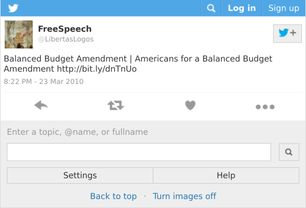

Advocates line up to back constitutional convention - Times Union (Jun 30 2017) <Click-to-Tweet>
Close
Image 1 of 1
Supporters of a constitutional convention hold a press conference at the state Capitol in Albany, N.Y., on Tuesday, June 27, 2017. ( Matthew Hamilton / Times Union ) less
Supporters of a constitutional convention hold a press conference at the state Capitol in Albany, N.Y., on Tuesday, June 27, 2017. Albany Times Union
Advocates line up to back constitutional convention As New Yorkers — not as interests groups, not as lobbyists but We want to be able to hold a constitutional convention and urge New Yorkers, our fellow citizens, to vote for a constitutional convention because we need to fix our state government. State lawmakers have the power to put constitutional amendments before the people on the November ballot.
Keywords: state, new yorkers, line, convention process, constitution, election reforms, convention, matthew hamilton / times union, delegates, constitutional convention, ballots, state capitol, state elections
Abstract
See: Know Thy Enemy
Balanced Budget Amendment | Americans for a Balanced Budget Amendment (April 22, 2016) (via Wayback Machine)
Americans for a Balanced Budget Amendment Supports SOUTH CAROLINA HCR S 30 Balanced Budget Amendment Application (March 10, 2014) <Click-to-Tweet>
March 10, 2014
Americans for a Balanced Budget Amendment, the nation's longest standing, active national organization which has promotion of a Balanced Budget Amendment as its sole goal, www.balanceourbudget.com, would like to lend its full support to S 30, which calls for a convention for proposing amendments under Article V of the U.S.
Constitution, to solely consider a Balanced Budget Amendment for the U.S. Constitution. For the first 200 years of our nation's existence, our country did a good job of balancing revenue and expenditures, apart from times of major wars. We are now running TRILLION DOLLAR deficits with no realistic plan to rein them in.
Keywords: revenue, greek-like fiscal disaster, good job, the u.s. constitution, hard choices, promotion, trillion dollar deficits, nation, the first 200 years, balanced budget amendment, active national organization, country, realistic plan
Abstract
Contact us | Americans for a Balanced Budget Amendment (March 16, 2012) (via Wayback Machine)
Endorsements | Americans for a Balanced Budget Amendment (March 16, 2012) (via Wayback Machine)
Members | Americans for a Balanced Budget Amendment (March 16, 2012) (via Wayback Machine)
Blogs | Americans for a Balanced Budget Amendment (January 19, 2012) (via Wayback Machine)

FreeSpeech on Twitter: "Balanced Budget Amendment | Americans for a Balanced Budget Amendment http://bit.ly/dnTnUo" (Mar 23 2010)
“What’s the process for a Constitutional amendment?”
“The Constitution provides that an amendment may be proposed either by the Congress with a two-thirds majority vote in both the House of Representatives and the Senate or by a convention of the states called by Congress upon request by two-thirds of the State legislatures.”Who We Are - American Promise (n/a) <Click-to-Tweet>
You are here: Home / Who We Are About American Promise The Problem: The legally granted right to unchecked political spending by corporations, unions, special interest groups, and wealthy individuals is silencing the voices of citizens and corrupting our ability to freely and … Read more The 28th Amendment The Constitution is the supreme law of the United States. … Read more About Us AP Advisory Council: American Promise assembled the first cross- partisan Advisory Council to speak out for the 28th Amendment. “ ” The concentrated financial influence of special interests in our politics is the number one … Read more Human Liberty | Equal Citizenship | Responsible Self-Government
See further discussion here:
https://twitter.com/YoBenCohen/status/984153478544097280 (Apr 11 2018)

https://twitter.com/usapromise/status/987327527445323777 (Apr 20 2018)
BBA Task Force – Saving the American dream! (Apr 21 2019) <Click-to-Tweet>
Contact He's In! Scott Walker takes up Ronald Reagan ’s torch as National Honorary Chair of the Balanced Budget Amendment Campaign! The Debt Threatens Everything We ’ve Built As interest rates and principal rise, interest will soar to $ 1 trillion / yr. ( 33 % of federal revenue ), eclipsing the cost of Defense and Social Security. We can not survive that way The States Must Target the Debt Via Convention ” Therefore, only a balanced budget amendment ( BBA ) will do. Given Congress ’ 75-year failure to propose a BBA, the states must do so by calling an Article V convention. With 28 states, we are closing in on the 34 necessary to call an Article V convention to propose a Balanced Budget Amendment! Sign the Petition!
Keywords: a balanced budget amendment, national honorary chair, amendment, congress, interest rates, campaign, simple statute, budget, balanced, convention, balanced budget amendment campaign, article v convention, defense and social security
Abstract
BBA4USA on Twitter: "Bull Market Provides BBA Opportunity https://t.co/E4bkoA7TbN… " (Jan 26 2018)
Bull Market Provides BBA Opportunity (January 19, 2017) <Click-to-Tweet>
" This is an unsustainable deviation... ' " Formally
Endorse the BBA Task Force Effort For this reason The Heartland Institute supports all efforts to use Article V of the Constitution to convene a convention of the states to propose amendments to the constitution, and none is more urgent than a balanced budget amendment. " It said they" enthusiastically commit both ourselves and Campaign Constitution in support of your effort to obtain more state applications". More and more respected conservative and libertarian leaders and the organizations they head are lining up to assist the BBA Task Force in its efforts to obtain the final needed six state Article V applications. 2018 looks to be a good year! ( Donations are not tax-deductible. )
Keywords: task force effort, current growth, reliable economic indicators, debt problem, state-led bba-focused article, significant rise, u.s., state legislative leadership, balanced budget amendment, the bba task force, article v of the constitution, article
Abstract
Americans for a Balanced Budget Amendment Supports West Virginia SCR 13 Balanced Budget Amendment Application (March 10, 2014) <Click-to-Tweet>
March 10, 2014
Americans for a Balanced Budget Amendment, the nation's longest standing, active national organization which has promotion of a Balanced Budget Amendment as its sole goal, www.balanceourbudget.com, would like to lend its full support to SCR 13, which calls for a convention for proposing amendments under Article V of the U.S.
Constitution, to solely consider a Balanced Budget Amendment for the U.S. Constitution. For the first 200 years of our nation's existence, our country did a good job of balancing revenue and expenditures, apart from times of major wars. We are now running TRILLION DOLLAR deficits with no realistic plan to rein them in.
Keywords: revenue, greek-like fiscal disaster, good job, the u.s. constitution, hard choices, promotion, trillion dollar deficits, nation, the first 200 years, balanced budget amendment, active national organization, country, realistic plan
Abstract
calconcon (n/a) <Click-to-Tweet>
New and improved-packing an even greater punch. Come and check it out! We're a small team of people, all CA residents, with different skills: Artists, Public Policy Planners, Political Advocates, Activists, Humanitarians and Planetary Advocates... working together to protect CA values, lands and freedoms- for ourselves, for USA and for the world community's best long-term interests. Who Are We? Need more details? Contact us We are here to assist. Contact us by phone, email or via our social media channels.
Keywords: planetary advocates, different skills, protect, activists, values, advocates, freedoms, best long-term interests, political advocates, ca, humanitarians, public policy planners, lands
Abstract
calconcon | Allies (n/a) <Click-to-Tweet>
Rather than treating nature as property under the law, rights of nature acknowledges that nature in all its life forms has the right to exist, persist, maintain and regenerate its vital cycles. Tree Sisters
Tree Sisters supports planetary restoration at the grass roots level: focus on women and tropical reforestation. Growing a global network of women who donate monthly to fund swift tropical reforestation. Earth Law Center
Earth Law Center works to transform the law to recognize and protect nature ’s inherent rights to exist, thrive and evolve. We do this by building a force of advocates for nature's rights at the local, state, national, and international levels. We envision a future in which humans and nature flourish together.
Keywords: vital cycles, nature ’s inherent rights, rights, tropical reforestation, roots level, people, nature, grass, earth law center, empower women, core curriculum, planetary restoration, corporate rule
Abstract
calconcon | Full Initiative (n/a) <Click-to-Tweet>
CIVIL RIGHTS: ’s right to live in full health and in a fully healthy Natural environment. CIVIL COMMUNITY RIGHTS: The natural environment shall not be deprived of its rights. Recognise human ’s paramount rights to an unpolluted, healthy planet. Recognise that no business practice is more important than respecting and protecting Nature ’s and the community ’s inherent needs for a clean and healthy lifestyle and uninterrupted life cycles. Work with local communities to ensure that no local or foreign business or government negatively affects the quality of life in their natural environment. Protect local business ’s ability to thrive locally in keeping with the health of the local community identity and self-determination. Nature & Community ’s health abroad The rights protected by the Constitution of the United States are the rights of nature-based beings only.
Keywords: ’s rights, human life, civil community rights, people, civil rights, protect, local economic development, natural lives, full health, human health, nature, being, healthy natural environment
Abstract
Home | California National Party (n/a) <Click-to-Tweet>
Policy Positions Our Platform is based on solutions, not ideology, and is written by our members, not powerful, moneyed interests. As conditions change and we mature as a party, we will continue to develop our platform — giving YOU a chance to help shape California's future. Party FAQ
Want to know more about who we are, what makes us different from other political parties, what are our goals, and how do we plan to achieve them? Take a look at our Frequently Asked Questions to learn the answers to these and other important questions.
Keywords: future, ideology, solutions, other important questions, california, party faq, other political parties, moneyed interests, policy positions, chance, parties, interests
Abstract
California Secessionists Are Hoping for a Trump Bump – Mother Jones (Mar 20 2018) <Click-to-Tweet>
The state flag — modeled after that of the short-lived California Republic — was draped in the corner. If Trump is the question, then California is the answer. For too long, the federal government has treated California like it ’s just another one of the 50 states. California is acting as an enabler. Actually, that ’s not a bad slogan! ” ( The California National Party tweeted, “ Hands off California, Putin. This building will not be a state legislature — it will be the capitol of our country! ” Delaware is a state. Wyoming is a state. California is a nation! ” That ’s kind of a workaround, right? ” But none of California ’s elected officials support it. “ ” ”
Keywords: state flag, recent california democratic party convention, the california national party, state capitol, california, california freedom coalition, new initiative, state ’s sanctuary laws, state ’s democratic leadership, the california freedom coalition, san francisco ’s mission district, states, san francisco ’s
Abstract
Citizens for Self-Governance - SourceWatch (Feb 25 2019) <Click-to-Tweet>
[ 6 ] ( See the brochure here. ) [ 7 ] About ALEC
ALEC is a corporate bill mill. It is not just a lobby or a front group; it is much more powerful than that. Corporations fund almost all of ALEC's operations. CSG Pushes Constitutional Convention at ALEC Conferences CSG has held workshops on its constitutional amendment strategy during at least two ALEC conferences. " " Convention of States is a much more radical approach to a constitutional convention... Convention of States Article V Application Gaining Momentum Unfairly Targeted ( 2013 ) [ 12 ] [ 14 ] [ 13 ]
CSG Funds Challenge to Wisconsin Law on Illegal Campaign Coordination [ 5 ] [ 17 ] [ 19 ] [ 20 ]
Funding [ 22 ]
Keywords: csg, resolutions, alec, front group, congressional term limits, csg pushes constitutional convention at alec conferences, the landmark legal foundation, federal power, constitutional convention, wisconsin law, " calling a convention of the states:the constitutional check on the abuses of federal power, illegal campaign coordination, state legislators
Abstract
Citizens for Self Governance 2015 Form 990 - Part B Section A – Public Support (PDF)
Citizens for Self Governance (Mar 06 2014) <Click-to-Tweet>
When this nation was founded, the government acted only to protect life, liberty and property. Now, it has encroached into every area of life, so we endlessly debate the healthcare, education, and economic policies our so-called leaders hand down to us. However, the citizens should make these crucial decisions. Let ’s act like it. Get Email Updates Please keep me informed of other CSG Projects: Convention of States Project
Thank you, your sign-up request was successful! Please check your e-mail inbox. Given email address is already subscribed, thank you! Please provide a valid email address. Citizens for Self-Governance is dedicated to the mission of recruiting educating, training, equipping and motivating a nationwide network of self-governing citizen activists, committed to bringing government back to the people.
Keywords: e-mail inbox, life, liberty, self-governing citizen activists, nationwide network, government, email, crucial decisions, constitution, other csg projects, email address, economic policies, property
Abstract
Constitutional Amendment Proposals to Overturn Citizens United (n/a) <Click-to-Tweet>
Restore Democracy Amendment
Democracy for All Amendment The Democracy for All Amendment is one of the most prominent amendment proposals in Congress. That is the amendment ’s greatest strength. Wolf PAC ’s Constitutional Convention Call The language Wolf PAC has used most recently * calls for …
“ ’s language does not offer a specific amendment proposal. At Wolf PAC ’s current pace, the convention they are advocating for would not occur until after 2050. In addition, even Wolf PAC ’s successful convention calls are somewhat muddled by another problem … Wolf PAC Has Used Different Language in Different States In its effort to get states to call for a constitutional convention, Wolf PAC has used at least four different proposals in different states. Restore Democracy Amendment I support the Restore Democracy Amendment
Yes!
Keywords: corporate constitutional rights, wolf pac ’s constitutional convention call, bipartisan support, democracy amendment, specific reforms, congress, money, state legislatures, corporations, citizens united, wolf pac has used different language in different states, ’s viability, prominent amendment proposals
Abstract
Compact for America Educational Foundation (n/a) <Click-to-Tweet>
COMPACT FOR AMERICA PROJECT PORTFOLIO
CLICK BELOW.
Keywords: project portfolio, below
Abstract
WV MetroNews DeMint pushes House of Delegates to support constitutional convention - WV MetroNews (Feb 13 2018) <Click-to-Tweet>
DeMint pushes House of Delegates to support constitutional convention
Gage Skidmore / Flickr
Former Sen. Jim DeMint speaking at the Conservative Political Action Conference in 2017. — Former South Carolina Sen. Jim DeMint was in Charleston Monday, pushing members of the House of Delegates to support a movement calling for a convention of states for amending the U.S. Constitution. DeMint serves as a senior adviser for the Convention of States Project, a nationwide organization pushing state legislatures to agree to hold a national convention, in which constitutional amendments would be proposed to limit the powers and spending of the federal government. Twelve states have already passed resolutions supporting a convention of states. DeMint said a bill calling for a convention needs 51 sponsors in the House of Delegates before it could head to a floor vote. “
Keywords: house of delegates, more states, the u.s. constitution, federal government, gage skidmore / flickr, national convention, powers, state bodies, constitutional convention, convention bodies, constitutional amendments, new idea, state legislatures
Abstract
Convention of States Pocket Guide (PDF)
COS_Intro_Powerpoint_051016_With_Notes (PDF)
COSAction (n/a) <Click-to-Tweet>
Make an impact with Convention of States! We ’ll I have whole-heartedly endorsed the Convention of States Project. I support the Convention of States Convention of States is the only solution. Convention of States is the only solution. Self-Governance to actually bring [ a Convention of States ] into reality. We the People have to take our power back through efforts like the Convention of States Project. Along... “ I support an Article V Convention of the States. We've got to take the power back. As I see it, the Convention of States may be the last chance within... " Hon. Only a Convention of States will give us effective solutions to the abuse of power in Washington,
Keywords: enumerated powers, states, government, convention of states, support, federal government, power, washington, constitutional convention, an amending convention, article v of the constitution, federal power
Abstract
David Schneider: Trust the Constitution to save the republic - COSAction (n/a) <Click-to-Tweet>
The federal government has grown out of control. Many confuse an Article V amending Convention of the States with a “ constitutional convention. ” They are not the same thing. An Article V Convention of States is limited to the subject matter in the applications passed through 34 States. We have become unfamiliar with the process of the states meeting in conventions. Fear is debilitating. The meeting is called. Ratification occurs if three-fourths ( 38 ) agree to the reforms. This process is ingenious. We already know which reforms could pass the high threshold: These are all reforms heavily supported by Americans, but that will never come from Congress. The time is now to act.
Keywords: article, deep state, congress, constitution, article v amending convention of the states with a “ constitutional convention, high threshold, convention of states, support, federal government, reforms, d.c., constitutional convention, application
Abstract
Endorsements - COSAction (n/a) <Click-to-Tweet> [names of politicians calling for a Convention of States]
" I have whole-heartedly endorsed the Convention of States Project. Join the constitutional revolution with Convention of States Project. Convention of States is the only solution. Self-Governance to actually bring [ a Convention of States ] into reality. " We the people have to take our power back through efforts like the Convention of States Project. I am under no illusion that those in D.C. will ever voluntarily give up their power. It is for this reason I have become a supporter of the Convention of States Project. We've got to take the power back. ” - " I support the Convention of States “ ” " Mark Meckler is President of Citizens for Self-Governance, the parent organization of the Convention of States Project. We can call a...
Keywords: enumerated powers, state applications, constitution, convention of states project, federal government, entrenched powers, ’s limited government, washington, the convention of states project, states project, limited convention, federal power, constitutional revolution
Abstract
House to vote on balanced budget amendment - COSAction (n/a) <Click-to-Tweet>
House to vote on balanced budget amendment
Published in Uncategorized on April 09, 2018 by Convention Of States The U.S. House of Representatives is set to vote on an amendment to the Constitution that would force the feds to balance the budget. It also is n't clear that the amendment would actually fix the problem. He compared the quantity of House members who cast their votes for the massive omnibus spending bill last month and the quantity of members required to approve spending under the constitutional amendment:
“ Proposed Const. balanced budget amdt requires 60 % ( 261 ) of whole House ( 435 ) for deficit spending.
Keywords: thomas massie, spending, last month, money, convention of states, amendments, balanced budget amendment, d.c., constitutional amendments, massive omnibus spending bill, house members, proposed const, deficit spending
Abstract
Learn About The COS - Convention of States (n/a) <Click-to-Tweet>
How many other people are you bringing? About Us
Citizens concerned for the future of their country, under a federal government that's increasingly bloated, corrupt, reckless and invasive, have a constitutional option. We can call a Convention of States to return the country to its original vision of a limited federal government that is of, by and for the people. Get Updates
Keywords: vision, original vision, option, federal government, country, constitutional option, limited federal government
Abstract
White House: "No balanced budget for the next ten years, and Congress is to blame" - COSAction (n/a) <Click-to-Tweet>
White House:" No balanced budget for the next ten years, and Congress is to blame"
Published in Uncategorized on February 13, 2018 by Convention Of States
President Trump has, for now, given up on balancing the federal budget in the next ten years – and Congress is to blame, his budget director said Monday, according to the Wall Street Journal. Combined with a newly passed spending deal and sweeping tax cuts, the budget would see the federal deficit once again rising past $ 1 trillion in the near-term.
Keywords: trump, budget director, balanced budget, congress, budget, last year ’s budget plan, the next ten years, federal budget, mick mulvaney, administration, federal deficit, monday, large structural changes
Abstract
See: Know Thy Enemy, and Christian Dominionists
Friends of the Article V Convention (Apr 02 2019) <Click-to-Tweet>
( Applications grouped by amendment subject, not required by the Constitution for a convention call )
. According to the Constitution, Congress is mandated to call an Article V Convention on the application of 34 states
. Congress created any process for counting state applications. Before implementation, the official count of state applications by Congress stood at zero. The reason: Congress has no rules in place to count the applications and issue the necessary convention call. Article V states," on the application... Congress shall call a convention for proposing amendments. Thus, based on the record of applications already gathered Congress must issue a convention call. Within the 140 applications officially recognized by the House Judiciary Committee are applications from two thirds of the states.
Keywords: state applications, actual call, convention applications, congress, applications, an article v convention, states, conventions, united states, convention call, house, 116th congress, public record
Abstract
A Real Step to Fix Democracy - The Atlantic (May 30 2014) <Click-to-Tweet>
What happens when Congress itself is the problem in politics? The framers of the Constitution thought of a solution for that very problem. In the 225 years since the Constitution was drafted, we ’ve never had a federal convention. But the idea is familiar within the states. There have been more than 230 state constitutional conventions. It ’s not even clear that the convention was convened in response to any act by Congress. The convention that Congress can convene is instead very different. No one is talking about a second constitutional convention. The inability of our government to act is a catastrophic problem for our kids, not for us. A convention is the chance for such pressure. That is the convention
Keywords: serious chance, congress, federal convention, state constitutional conventions, very problem, american government, constitution, top problem, act, amendments, harvard law school, problems, state legislatures
Abstract
There were 13 Original Colonies and Now Iowa is about to Become the 13th State to Pass a Convention of States | Mark Meckler (Mar 20 2018) <Click-to-Tweet>
There were 13 Original Colonies and Now Iowa is about to Become the 13th State to Pass a Convention of States March 20, 2018 I ’m really excited. That would make Iowa the thirteenth state. It ’s really exciting to get to thirteen states. Who might that be? It ’s one of these groups that calls themselves conservative. They ’re called the Iowa Faith and Freedom Coalition. The ‘ Iowa Faith and Freedom Coalition ’ that ’s opposed to the Constitution. MECKLER: Yes, unbelievably, these guys are registered lobbyists. I ’m a registered lobbyist, there ’s nothing wrong with that. It ’s really frustrating to watch. And the lies are what? MECKLER ” ” It ’s the states reining in the federal government. ” “ Exactly.
Keywords: different perspectives, 13th state, congress, constitution, pass a convention of states, ’m, mark levin, convention of states, prevalent religions, registered lobbyists, ’s, delegates, nation ’s concerns
Abstract
We the People, Not We the Corporations | Move to Amend (Mar 29 2019) <Click-to-Tweet>
10 We the People, Not We the Corporations Human beings are people; corporations are legal fictions. In a democracy, the people rule. We Move to Amend. But they are not themselves members of “ We the People ” by whom and for whom our Constitution was established. " Court Justice Stevens, January 2010
Announcements
March 25, 2019
Pauline Hanson EU Lobby Ban
March 22, 2019 # FreeThePeople From Corporate Rule-May 28 Actions! March 18, 2019 Barnstorming Tour in Ohio with Keyan Bliss
March 13, 2019 Move to Amend is barnstorming in Ohio in late March and early April! We the People Amendment will Fix the Corporate Rule Crisis
March 8, 2019 Spring Barnstorming Tour through the South with Kaitlin Sopoci-Belknap
March 7, 2019
Keywords: real democracy, late march, congress, the supreme court, actions, congressional, march 5,2019, people, may 28th, corporate rule-may, early april, april, march
Abstract
Move to Amend's Position on a Constitutional Convention | Move to Amend (Jan 14 2016) <Click-to-Tweet>
Article V provides two mechanisms to amend the US Constitution—2/3 of Congress make a specific proposal, or 2/3 of the states call a convention. Article V requires the U.S. Congress to call for a convention when two-thirds ( 34 ) of the state legislatures petition Congress for one. One reason that an Article V convention has never been called is that when close to two-thirds of the states have petitioned Congress, Congress has itself taken action. A wide-open convention is desirable. By Congress In 1987 there were thirty-nine ( more than the 34 required ) convention applications. By 1993 there were 45 state applications for a general convention ( Paulson ). Can Congress impede an Article V convention? Proposing Constitutional Amendments by Convention: The Constitutional Convention:
Keywords: article, the us constitution—2/3 of congress make a specific proposal,or 2/3 of the states call a convention, applications, congress, article v, an article v convention, states, amendments, convention, state conventions, natelson, delegates, time limits
Abstract
See also: Natelson, Robert G., below.
Frequently Asked Questions | Move to Amend (n/a) <Click-to-Tweet>
Read more about the history and timeline of corporate personhood encroachment on human constitutional rights here. There are two conceptions of" corporate personhood". However," corporate personhood" also commonly refers to the Supreme Court-created precedent of corporations enjoying constitutional rights that were intended solely for human beings. What is the process to amend the US Constitution? The rights protected by the Constitution of the United States are the rights of natural persons only. So we MUST get it right! Our primary organizing tool is local resolution campaigns. This is a grassroots campaign- we are encouraging folks to form local Affiliates so they can participate in Move to Amend. Is n't the United States a republic? It is not a law, and thus can not be overturned by corporate lawyers.
Keywords: human constitutional rights, local resolution campaigns, congress, constitution, local businesses, move, state laws, corporations, corporate personhood encroachment, communities, laws, amend, grassroots movement
Abstract
James Madison and the Constitution’s “Convention for Proposing Amendments”, by Robert G. Natelson (Jul 09 2012) < (PDF) Click-to-Tweet>
Pruitt tapes revealed: Evolution's a 'theory,' 'majority' religions under attack - POLITICO (Mar 02 2018) <Click-to-Tweet>
We're saying to a certain category of religion,' No, you ca n't be a part of the public square, because you are the majority religion, historically. History has proven that people will not do what's right without religious principles to guide them, Pruitt said. Each man did what was right in his own eyes,' and you have chaos, ” Pruitt said. Pruitt acknowledged some trepidation about holding a constitutional convention, which could make wholesale changes to the nation ’s founding charter. ’s time. Pruitt disagreed, saying: “ I ’m a bit better-looking than them, ” Pruitt quipped. It was not bequeathed to me, it was not unalienable, right? ”
Keywords: religious overtones, right, pruitt, majority religion, constitutional rights, people, religious believers, constitution ’s, scott pruitt, same-sex marriage, more rights, wholesale changes, climate change
Abstract
See also: ALEC in Know Thy Enemy
Constitutional Amendment Resolution Language | Public Citizen (Apr 22 2019) <Click-to-Tweet>
Resolution in Support of Amending the United States Constitution to Prevent Corporate Control of Elections the United States Supreme Court ’s ruling in Citizens United v. FEC overturned longstanding precedent prohibiting corporations from spending their general treasury funds in our elections; and
WHEREAS, the United States Supreme Court ’s ruling in Citizens United v. FEC will now unleash a torrent of corporate money in our political process unmatched by any campaign expenditure totals in United States history; and
WHEREAS, Citizens United v. FEC purports to invalidate state laws and even state Constitutional provisions separating corporate money from elections; and
Whereas,
Keywords: democracy, united states supreme court, united, citizens united v. federal election commission, moneyed corporations, people, federal elections, corporations, state constitutional provisions, states, united states constitution, constitutional amendment, the united states constitution
Abstract
A Budget That Works For All Americans | Public Citizen (Apr 22 2019) <Click-to-Tweet>
We consistently face the issue of conservatives proposing extreme budget cuts that will further rig the system billionaires and big corporations. These required spending caps have forced austerity measures on already cash-strapped government agencies meaning vital social programs have been cut over the years. Worse, recent proposed budget proposals would force further cuts for the purpose of providing tax cuts to the wealthy and profitable corporations. Members of Congress should not support a budget that would shut down critical public services and protections. No Ideological Poison Pill Riders
Beyond cutting essential monies needed to keep our government functioning and providing the basic services we depend on, conservatives are also threatening to attach hundreds of harmful policy riders to the budget that would repeal essential public protections
Keywords: crucial services, subsequent cuts, congress, ideological poison pill riders, hundreds, extreme budget cuts, adequate consumer protections, government spending levels, american families, keep essential programs, further cuts, force, clean air
Abstract
18-0410-AVC-Progress-Report1.pdf (April 10, 2018) (PDF)
Article V Progress Report | State Legislators' Article V Caucus (n/a)
Counting the carryover items of Article V legislation from 2017 and the new legislation introduced in 2018, approximately 145 Article V items of legislation have been introduced in 36 states this year. It has been a slow year for the Article V movement. US Term Limits remains the only successful advocacy group to have passed in a state with its passage in Alabama earlier this year. focused this year on South Carolina, Kentucky and Minnesota. That is an unlikely feat. The COS Project, which has applications passed in 12 states, is active in at least 12 other states. ’s successful rescission effort. WP remains active in Hawaii and 7 other states. There is likely an air of Article V burnout in some state legislatures that is further tamping down our successes. and I welcome yours.
Keywords: this year, only successful advocacy group, article v, legislation, other states, states, fellow article, unlikely effort, senate judiciary committee, minority report, south carolina, others, bba resolution
Abstract
Progress Report on Article V Efforts | State Legislators' Article V Caucus (n/a)
Progress Report on Article V Efforts
Click on image to enlarge. Counting the carryover items of Article V legislation from 2017 and the new legislation introduced in 2018, approximately 145 Article V items of legislation have been introduced in 36 states this year. It has been a slow year for the Article V movement. US Term Limits remains the only successful advocacy group to have passed in a state with its passage in Alabama earlier this year. focused this year on South Carolina, Kentucky and Minnesota. That is an unlikely feat. ’s successful rescission effort. WP remains active in Hawaii and 7 other states. ANALYSIS: There is likely an air of Article V burnout in some state legislatures that is further tamping down our successes. and I welcome yours.
Keywords: article, this year, only successful advocacy group, article v, legislation, other states, states, efforts, bba resolution, senate judiciary committee, minority report, south carolina, others
Abstract
State Legislators' Article V Caucus (n/a)
Convention of States Project Gets 13th State
New Federal Budget Calculator Offered by America Off Balance Federalism in the News
Updated Article V Campaign Info First A5 Progress Report for 2019 Article V Progress Report
Enclosed is your initial 2019 “ President ’s Day ” edition of The Article V Convention Legislative Progress Report. That makes 13 states where the COS resolution has now passed. Over the past year, Loren Enns has assumed leadership over the BBA effort. Loren has been working Article V for over a decade. The BBA effort has some very targeted states this year starting with South Carolina. So far this year, approximately 75 pieces of Article V legislation have been dropped in 27 states.
Keywords: state, article, balance, this year, 13th state, article v, first a5 progress report, bba effort, new federal budget calculator, leadership, multiple article, convention of states project gets, resolution
Abstract
Report of 2018 Permanent Platform & Resolutions Committee (Jun 16 2018) (PDF) <Click-to-Tweet>

United for the People (n/a) <Click-to-Tweet>
United For The People The Supreme Court ’s ruling in Citizens United v. FEC has focused America ’s attention on the dangerous influence of corporate power in our democracy and the urgency of taking all necessary measures to undo that influence, including amending the Constitution. Citizens United, which opened the floodgates to unlimited corporate spending to influence elections at all levels of government, has brought home the importance of amending the Constitution to ensure that “ United For The People believes that America works best when our government is of, by, and for the people. Though our supporters have differences in scope and tactics, we are organizations united in the understanding that the Court ’s decisions in Citizens United and related cases must be remedied by amending the Constitution in order to restore the democratic promise of America.
Keywords: ’s attention, unlimited corporate spending, necessary measures, constitution, united for the people, government, corporate power, the years, democratic promise, citizens united, dangerous influence, the supreme court ’s, america
Abstract
The Logical Path to End Corruption – The Young Turks – Medium (n/a) <Click-to-Tweet>
There are only two ways to propose a U.S. Constitutional Amendment, as stated in Article V of the U.S. Constitution:
⅔ of each house of Congress can vote to propose an amendment, or
⅔ of the states ( 34 states ) can pass a resolution that calls for a national convention to propose an amendment. Article V also states that either way the amendment is proposed, whether by Congress or a convention, it then goes back to the states for approval ( aka “ ratification ” ). And the opposition may not be who you would think. ” That is factually not true. The runaway convention hypothesis has been debunked by “ “ I think the convention can be limited. This system must be fixed.
Keywords: article, an article v convention, article v of the u.s. constitution:
⅔ of each house of congress can vote to propose an amendment,or
⅔ of the states ( 34 states ) can pass a resolution that calls for a national convention to propose an amendment, campaign finance reform, campaign platform, the u.s. constitution, big money, vast scholarly work, states, stanley kubrick ’s, national convention, issue, hard work
Abstract
The Solution - Wolf PAC Staging (n/a) <Click-to-Tweet>
There are only two ways to propose amendments to the U.S. Constitution:
⅔ of Congress can propose an amendment or ⅔ of the states can apply for a convention to propose an amendment
Whether an amendment is proposed by Congress or a convention it must then be approved by 75 % of the States ( currently 38 ) before becoming part of the U.S. Constitution. ” That is why he advocated for, and the 1787 convention approved, giving Americans a way to propose amendments other than Congress. The 17th Amendment is the best example we have of a convention campaign effectively working to add an Amendment in the U.S. Constitution. Currently five States have passed resolutions applying for a limited convention under Article V to propose an amendment to the U.S. Constitution that will ensure the integrity of our elections.
Keywords: u.s., state shy, congress, 28th amendment, amendment, the u.s. constitution, amendments, proposing amendments, constitutional amendment, representative democracy, direct election, state-based convention route., american people
Abstract
Welcome - U.S. Term Limits (n/a) <Click-to-Tweet>
Mitch McConnell Signs U.S. Term Limits Pledge In
25 Florida State Legislators Named “ Champions of Term Limits ”
For immediate release March 18th, “ Champions of Term Limits ” in Florida. The award recognizes “ a steadfast
2019 Special Elections Bring Out Overwhelming Support for Congressional Term Limits
by Stacey Selleck To date, in the Pennsylvania ’s twelfth congressional district race, 12 U.S.
Inaugural Term Limits Day a National Success!
by Stacey Selleck February 27th marked the first ever National Term Limits Day. Congressional Tenure Steadily Increasing
by Stacey Selleck Nick Tomboulides, Executive Director, US Term Limits. I think terms limits actually stymie the
Democratic-Republican Day Today is the first National Term Limits Day. But term limits themselves are not new.
Keywords: service, limits, term, term limits, the congressional research service, national success, service tenure, congressional term limits, first, congressional tenure, national term limits day
Abstract
Article V - U.S. Term Limits (n/a) <Click-to-Tweet>
Term limits supporters always wonder “ how can we get a constitutional amendment to term limit Congress if Congress — which wo n’t limit its own power — The Article V Convention allows the American people to term limit Congress without needing congressional approval. Two-thirds of state legislatures ( 34 ) must pass bills applying for a convention to consider only amendments for congressional term limits. Congress is compelled by law to call the convention, which includes delegates chosen solely by their respective states. The convention reports out an amendment for congressional term limits. The amendment must be ratified by either three-quarters ( 38 ) of state legislatures or state conventions. If you ’re with us in this fight, please sign the petition in support of congressional term limits. This is an exciting time to be a term limits advocate.
Keywords: limits, constitution, congress, constitutional amendment, term limit, congressional term limits, convention, congressional approval, own power, senate, convention effort, house, state legislatures
Abstract
Article V Myths - U.S. Term Limits (n/a) <Click-to-Tweet>
Far from a runaway, the 1787 Convention was yet another example of an American convention doing exactly what it was told to do, whether broad or narrow. If the state applications specify radical amendments, then that ’s not running away it ’s attempting to create an entire convention based on bad ideas. Delegates to the convention – who can be recalled and even imprisoned by their states — have some discretion, but it ’s limited to amendments within the subject area chosen by 34 states. Remember: the convention itself has zero power to amend our Constitution. is the notion that Congress will take over the convention to send its favorite radical amendments to the states. This is invalid for one obvious reason: Congress does n’t need a convention to do that.
Keywords: constitution, runaway convention thinking, interstate conventions, radical amendment, amendment, term limits, law, term limits convention, congress, convention, runaway convention, state delegations, only power
Abstract
Model Article V Term Limits Convention Application - U.S. Term Limits (n/a) <Click-to-Tweet>
The legislature of [ INSERT STATE NAME ] hereby makes an application to Congress, as provided by Article V of the Constitution of the United States of America, to call a convention limited to proposing an amendment to the Constitution of the United States of America to set a limit on the number of terms that a person may be elected as a Member of the United States House of Representatives and to set a limit on the number of terms that a person may be elected as a Member of the United States Senate. This application constitutes a continuing application in accordance with Article V of the Constitution of the United States of America until the legislatures of at least two-thirds of the several states have made applications on the same subject.
Keywords: the united states of america, article v of the constitution of the united states of america, the united states senate, term, limit, other applications, congress, convention, convention application, same subject matter, the united states house of representatives, applications, united
Abstract
See also: Know Thy Enemy
The 'Calexit' plan to 'divorce' California from the U.S. is back again - The San Diego Union-Tribune (Apr 24 2018) <Click-to-Tweet>
Could the third time be the charm for advocates of
California secession
from the U.S.? Yes California ” is giving it another try anyway. ” the campaign ’s website says. ”
Signature-gathering attempts were dropped amid questions about founder Louis Marinelli ’s ties to Russia. Now Yes California is trying again. If the measure passes, and yes, that ’s a big if, an official referendum would be held in 2021. Yes California says its main policy concerns include education reform, universal health care, fighting climate change, localizing immigration enforcement and keeping the state ’s tax revenue in the state. Here ’s what else you should know about it. Meanwhile, efforts to form a new state called “ new California ” and to split California into three separate states are also underway.
Keywords: russia, new state, donald trump, california, vote possible, calexit, ’s ties, secession initiative, california secession, immigration enforcement, state ’s tax revenue, states, campaign ’s website
Abstract
The Logical Path to End Corruption – The Young Turks – Medium (Apr 12 2017) <Click-to-Tweet>
There are only two ways to propose a U.S. Constitutional Amendment, as stated in Article V of the U.S. Constitution:
⅔ of each house of Congress can vote to propose an amendment, or
⅔ of the states ( 34 states ) can pass a resolution that calls for a national convention to propose an amendment. Article V also states that either way the amendment is proposed, whether by Congress or a convention, it then goes back to the states for approval ( aka “ ratification ” ). And the opposition may not be who you would think. ” That is factually not true. The runaway convention hypothesis has been debunked by “ “ I think the convention can be limited. This system must be fixed. Corruption must be uprooted.
Keywords: the u.s. constitution, article v of the u.s. constitution:
⅔ of each house of congress can vote to propose an amendment,or
⅔ of the states ( 34 states ) can pass a resolution that calls for a national convention to propose an amendment, issue, vast scholarly work, campaign platform, campaign finance reform, hard work, article, national convention, an article v convention, stanley kubrick ’s, big money, states
Abstract